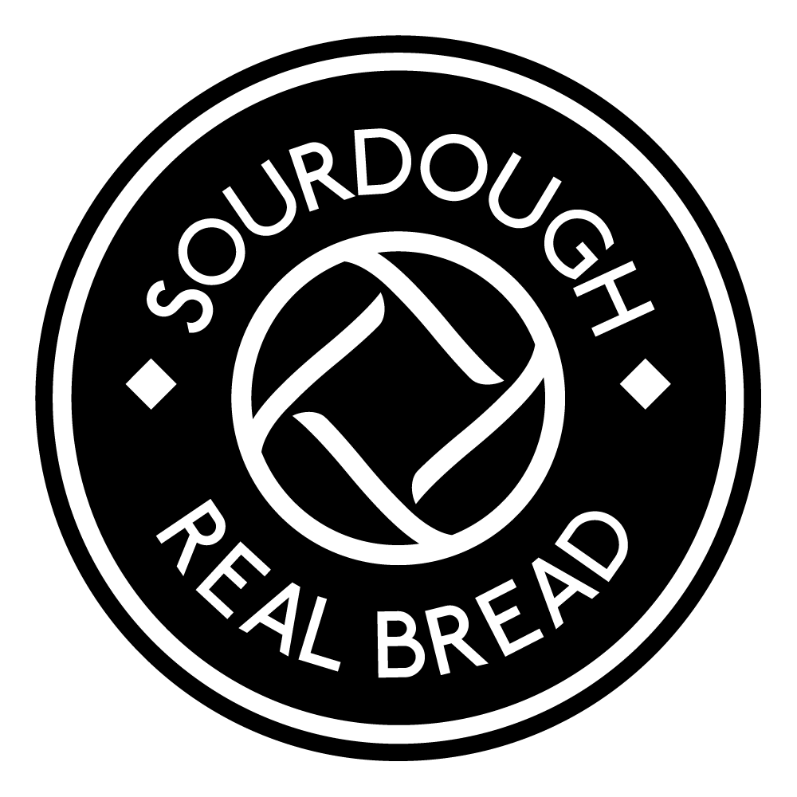
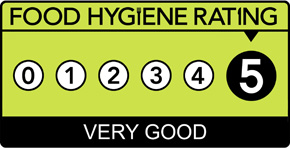

Real Bread
Pete's Bread is REAL sourdough — just flour, water and sea salt. No additives. No industrial yeast. Pete's Bread is a member of the Real Bread Campaign.

Award Winning
The Peatlands Loaf — Pete's signature sourdough — won a Gold award at the Tiptree World Bread Awards 2022.
★★★★★
Food You Can Trust

Pete's Bread bakery holds a 5-star Food Hygiene rating, awarded by Causeway Coast & Glens Borough Council.